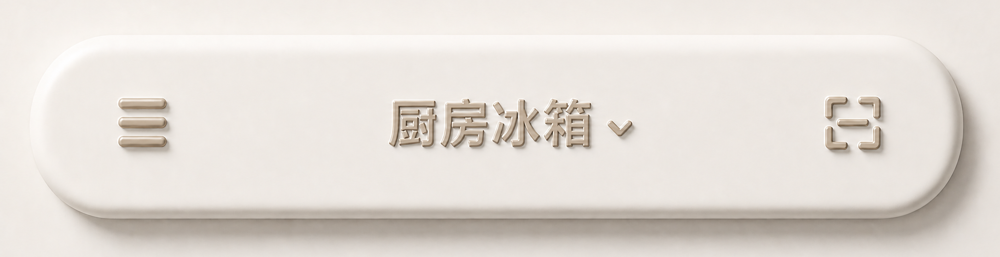
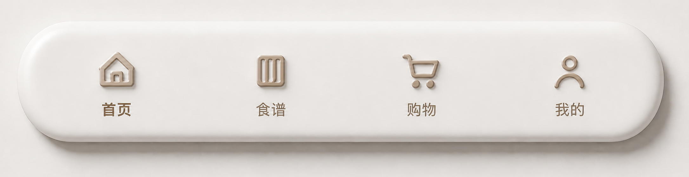
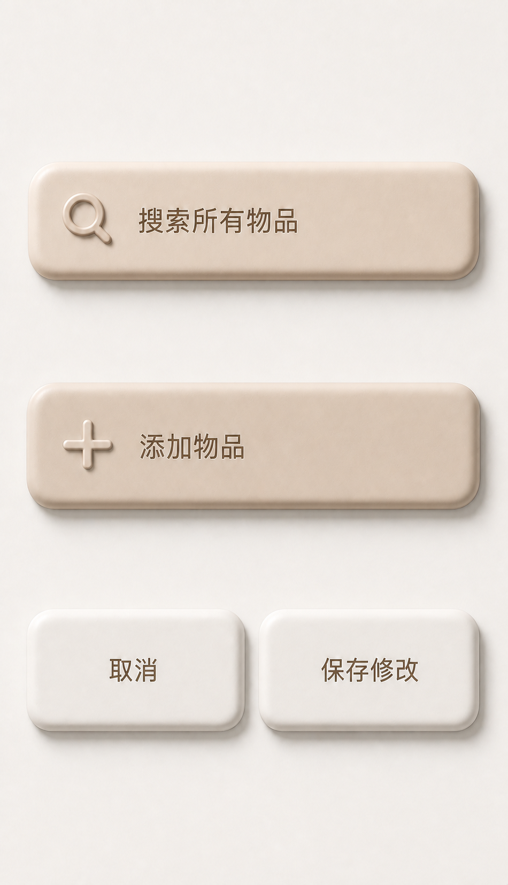

家常食橱 · 拟物主题原图配色校正
材质与层级沿用 v4，颜色和白平衡以用户提供的 AGIC 参考图为唯一基准
设计评审稿 v5 · 仅配色校正
1. 顶部栏 · 暖奶油白应用壳

2. 底部导航 · 中性奶油白与咖啡色浮雕

3. 配色与光照规则
页面背景、顶部栏和底部栏使用原图接近中性的暖奶油白，不叠加浅咖啡或偏黄遮罩。
搜索框和主按钮使用原图低饱和咖啡奶油色；次按钮回到奶油白。
浮雕正面使用原图的浅咖啡奶油色，暗面、平面文字和状态文字使用原图咖啡色。
左上高光、右下暗面和右下软影的方向不变，本轮不改曲面几何或厚度。
4. 共享控件 · 咖啡奶油色与平面文字
